Methodology
The procedure to generate indicators on the performance of the Costa Rican Telecommunications Sector comprises three phases: collection, review and analysis and creation of results.
For the construction of this report, the information submitted by operators for 2013 was processed and reviewed and the data sets constructed for the 2010-2012 period were validated and corrected as well. The latter were previously published as a preliminary release, which was subject to be reviewed. Hence, some of the figures published in September 2013 have been modified and updated.
Figure 1: Process of Collection, Review and Analysis and Creation of Indicators on the Performance of the Telecommunications Sector
Source: SUTEL, General Directorate for Markets
The following describes each step in the process of obtaining information and building the indicators incorporated into this report.
Data Collection
The development of this stage involves not only the data collection process from the operators, using the indicator templates via the official e-mail addresses created with this purpose (
indicadores.mercados@sutel.go.cr,
gestiondocumental@sutel.go.cr), but also the development of a communication and training strategy, aimed at operators and telecommunications service providers, in order to ensure they had the proper understanding of the concepts and definitions associated with each indicator. These activities included:
- Publishing of the Data Collection Calendar:as set out in this schedule, the Telecom Service Providers are required to submit monthly indicator templates within the first 30 calendar days after the current month end closing, and the quarterly templates no later than 30 calendar days after the current quarter end closing.
The calendar for the compilation of indicators for 2013 was published on February 5, 2013, in Article No. 24 of Official Gazette, Issue No. 25. - Quarterly Reminders:To ensure the timely data collection from the different network operators and telecom service providers, the SUTEL (Superintendence of Telecommunications) issued several reminders throughout the year, by email and by phone, for the contact persons of each of the operators and providers of telecommunications services, which have the mandate to submit this information.
- Updating and Training Workshops for operators and suppliers: in 2013, the SUTEL conducted the first "Day of Workshops for Market Indicators of the Telecom Sector", which took place from February 7th through 21st, 2013. During this activity, the process of data collection was explained in detail, through which the General Directorate for Markets would be building the results on the industry performance and the indicator templates to be used for the collection of data. The importance for this regulating body to have a solid base of reliable indicators was also emphasized. In total, 153 representatives of the operators and telecommunications service providers attended this meeting, including 47 operators with an active commercial offer. In addition, the workshops were attended by representatives of the National Institute of Statistics and Census (INEC) and the Central Bank of Costa Rica (BCCR).
Table 1. Attendees to the first "Day of Workshops for Market Indicators of the Telecom Sector", February 2013
| Date | Service | Operators | Representatives |
|---|
| 07/02/2013 | Fixed Basic Traditional | Instituto Costarricense de Electricidad | 6 |
| 11/02/2013 | Fixed VoIP | Amnet Cable Costa Rica, S.A. (TIGO) | 1 |
| Banco Central de Costa Rica | 2 |
| Call My Way S.A. | 2 |
| E-Diay S.A. | 3 |
| Instituto Costarricense de Electricidad | 3 |
| Interphone S.A. | 1 |
| Lattan Alliance | 1 |
| Metro Wireless Solutions de Costa Rica MWS S.A | 1 |
| R &H International Telecom Services S.A. | 2 |
| Telecable Económico T.V.E, S.A | 4 |
| Televisora de Costa Rica S.A. (Cabletica, Tuyo Móvil) | 2 |
| Total | | | 22 |
| 14/02/2013 | Mobile Telephones | Banco Central de Costa Rica | 3 |
| Claro Costa Rica CR | 2 |
| Virtualis, S. A. (Fullmóvil) | 4 |
| Instituto Nacional de Estadística y Censos | 2 |
| Instituto Costarricense de Electricidad | 12 |
| Telefónica de Costa Rica TC S.A. | 4 |
| Televisora de Costa Rica S.A. (Cabletica, Tuyo Móvil) | 2 |
| Total | | | 29 |
| 18/02/2013 | Internet &Leased Lines | Cable Visión de Costa Rica CVCR, S.A. | 1 |
| Call My Way S.A. | 2 |
| Grupo Konectiva Latam S.A | 1 |
| Grupo Publicidad e Internet INC S.A. | 1 |
| Grupo Telco de Centroamérica S.A | 1 |
| Level Three Communications Costa Rica S.R.L. | 1 |
| Netsys C.R, S.A | 3 |
| Redes Inalámbricas de C.R.(REICO) | 3 |
| RSL telecom (Panamá) S.A. | 2 |
| Sistemas Fratec S.A. | 1 |
| Super Cable Grupo Ten T S.A. | 2 |
| Tecapro Infonet S.A. | 2 |
| Amnet Cable Costa Rica, S.A. (TIGO) | 4 |
| Total | | | 24 |
| 20/02/2013 | Internet &Leased Lines | Gas Natural Fenosa Telecomunicaciones Costa Rica S.A. | 1 |
| Holst Van Patten S.A | 1 |
| Instituto Costarricense de Electricidad | 1 |
| OBCR Orange Business Costa Rica S.A. | 1 |
| Promitel Costa Rica, S. A. (LAZUS) | 1 |
| Radiográfica Costarricense | 1 |
| Total | | | 6 |
| 21/02/2013 | Internet &Leased Lines | Asesoría en Electrónica, Computación y Construcción, ASELCOM | 4 |
| Cable Caribe S.A. | 1 |
| Cable Televisión Doble R S.A (Cable Max) | 1 |
| Cable Zarcero S.A (Mega Cable) | 1 |
| Cooperativa de Electrificación Rural de Alfaro Ruiz RL (Coopealfaro Ruiz R.L.) | 3 |
| Cooperativa de Electrificación Rural de San Carlos R.L (Coopelesca R.L) | 3 |
| E-Diay S.A. | 1 |
| Grupo Telco de Centroamérica S.A | 2 |
| Instituto Nacional de Estadística y Censos | 1 |
| Level Three Communications Costa Rica S.R.L. | 1 |
| Promitel Costa Rica, S. A. (LAZUS) | 1 |
| Red Punto Com Technologies S.A. (Continex) | 4 |
| Super Cable Grupo Ten T S.A | 1 |
| Técnicos en Telecomunicaciones S.A.L. | 1 |
| Televisora de Costa Rica S.A. (Cabletica, Tuyo Móvil) | 2 |
| Total | | | 27 |
| 21/02/2013 | Subscription TV | Amnet Cable Costa Rica, S.A. (TIGO) | 3 |
| Asesoría en Electrónica, Computación y Construcción, ASELCOM, S. A. | 3 |
| Inversiones Brus Malis, LTDA. (Cable Brunca) | 3 |
| Cable Caribe S.A | 1 |
| Cable Centro S.A | 1 |
| Cable Sur S.A | 1 |
| Cable Televisión Doble R S.A, (Cable Max) | 2 |
| Televisora de Costa Rica S.A. (Cabletica, Tuyo Móvil) | 2 |
| Cable Zarcero S.A (Mega Cable) | 1 |
| Cablevisión de Occidente S.A | 2 |
| Claro Costa Rica CR S.A. | 2 |
| Cooperativa de Electrificación Rural de San Carlos R.L (Coopelesca R.L) | 1 |
| Instituto Nacional de Estadística y Censos | 1 |
| Instituto Costarricense de Electricidad | 6 |
| P.R.D. Internacional S.A | 1 |
| Servicios Femarroca T.V. S.A (Cable Pacayas) | 1 |
| Servitel Corp S.A | 1 |
| Super Cable Grupo Ten T S.A | 2 |
| Técnicos en Telecomunicaciones S.A.L. | 4 |
| Telecable Económico T.V.E, S.A | 3 |
| Televisora de Costa Rica S.A. (Cabletica, Tuyo Móvil) | 1 |
| Transdatelecom S.A. | 3 |
| Total | | | 45 |
Source: General Directorate for Markets, File: Workshop Indicators 2013.
Data Review &Analysis
Once the information is received, it is reviewed and examined in detail by the professional Indicators Team of the General Directorate for Markets. This review process has the purpose of ensuring that the information provided meets the following requirements:
- Complete Information. If there’s missing information, the company responsible to provide it must include reasons that will justify its absence.
- Consistency of the figures.This means that the submitted figures do not reflect mismatches in relation to other periods or to the information sent by the these companies to other domestic and foreign bodies or to the SUTEL, in order to comply with other requirements. If this inconsistency is detected, then the operator is advised to provide the appropriate clarification or correction.
- Explanatory notes on the construction of the figures. The templates, through which the information is submitted, should include notes detailing the items that are listed in each of the indicators, in order to determine the consistency of the figures provided.
After completing this process, the General Directorate for Markets (DGM) notifies the telecommunications service providers about the status of the information provided. If the information provided is found to meet the above criteria, it will be stated so in the notification and the information will be systemized, in order to generate results. Conversely, if the information submitted does not meet any of the criteria, and if further clarifications or corrections are required, the specific observations and the maximum response time will be included in the notification.
This review and analysis process may imply, if necessary, having to meet with the telecommunications service providers, in order to clarify any questions that may arise from the information provided, thus finalizing the corresponding quarter.
In 2013, the Indicators Team made two semiannual cuts to analyze data, one at the end of July and one at the end of January 2014. In both cases, Data Closings were made by Operator for the 2010-2013 period, with specific comments on the consistency and missing figures, so that the operators could review and correct them, in order to debug the data and build a database on the various markets that make up the sector.
In addition to these review processes, a large of meetings were held with different operators, in order to clarify the indicators required in the templates and to share the observations made by the Superintendence regarding the data supplied by them. A several of email and other digital inquiries were addressed and several reminders were sent to the different operators, seeking to obtain the required information on time and in compliance with the requirements.
Generating Results
This activity corresponds to the step of generating reports based on the data derived from the main analysis of the information provided by the network operators and telecommunications service providers, as well as those collected from secondary sources.
Description of the Telecommunication Services
In order to standardize and simplify the way in which market data is collected, supplied by the service providers and network operators, the telecommunication services available to the public have been segregated based on the deployed network and the type of signal they carry. This classification is shown in the following image.
Figure 2. General Service Classification
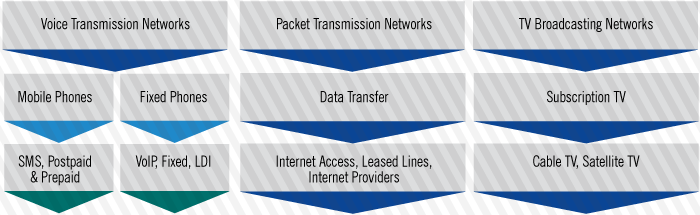
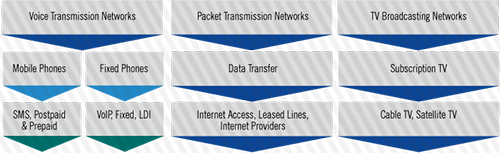
Source: Prioprietary
This service classification includes the public telecommunication networks that carry voice, data and television signals, as these have the ability to provide various telecommunication services.
Four general service categories were created, in order to define the analysis and the processing of the information provided;namely, mobile and fixed telephone services for voice signals, data transfer for transmitting packets over Internet Protocol and subscription TV networks that carry television signals. The following briefly describes the function and architecture of each one of these services.
Mobile Telephones
Mobile phone networks began to develop as of 1979, when NTT in Japan deployed the first analog cellular system for voice transmission. Ever since then, networks have undergone significant changes, mainly because these first generation systems would not operate together (interoperability).
The most widely deployed systems, in this first generation, were the Advanced Mobile Phone Systems (AMPS) in the United States and Total Access Communications Systems (TACS) in Europe, both used modulation frequency for radio transmission.
By the end of the 80s, the second generation systems appear, with the particularity that they supported data transfer at low speeds. These systems were based on the technologies of Time Division Multiple Access (TDMA) and Code Division Multiple Access (CDMA), in order to improve the spectrum efficiency, to provide data services and to enhance the roaming services.
The most widely accepted standard was the Global System for Mobile Communications (GSM), which remains operable in many parts of the world.
This standard remained in development and evolved into the 2.5G generation, thanks to the standardized design of devices such as the BSC (Base Station Controller) and MSC (Mobile Switching Center), including the commercially successful SMSC (Short Message Service Centre) and the consolidation of the PCN (Packet Core Network), which was made possible thanks to the deployment of the GPRS (General Packet Radio Services) technology. This technology provided the capabilities needed to establish better connection times, the ability to charge for traffic and higher speeds for wireless access to the network.
In the following image, the standard architecture of a second generation system is shown, portraying the access and core elements.
Figure 3. Network Architecture for a 2G System
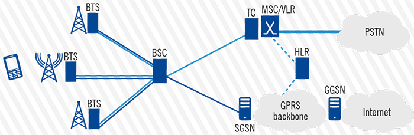
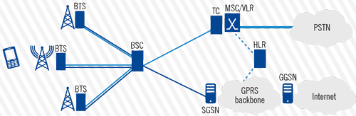
Source: Prioprietary
Subsequently, the passage to the third generation mobile networks came with the development of the technology for data transmission EDGE (Enhanced Data Rates in GSM Environment), which increased the volume of traffic on the air interface;the packet behavior of packets on this interface remained similar to that of a call in the circuit switched network. At this point in time, it was necessary for the design of the technological platform for mobile networks to be governed by a global standard, which resulted in the release of the IMT-2000 by the International Telecommunications Union, whose requirements were consolidated in the first version of the WCDMA specifications developed by the 3GPP (3rd Generation Partnership Project) in the so called Release 99.
The architecture of third generation systems suffered significant changes in the access network, particularly in devices such as the Node B and RNC (Radio Network Controller), but also in Core Components, such as the SGSN (Serving GPRS Support Node), which was modified for transferring, tunneling and packet routing and for managing mobility between areas and data billing. Also, a service control layer called IMS (Internet and Multimedia Subsystem) was created, which came to increase the functionality of the 3G networks.
Figure 4. Network Architecture for a 3G System
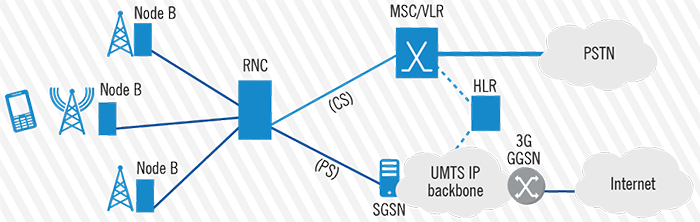
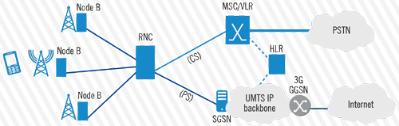
Source: Prioprietary
Overall, the new features of these systems were competitive benefits for 3G networks, due to the reduced latency, greater spectral efficiency by better utilizing the spectrum, increased coverage, lower operating costs and increased data transfer rate.
The fact that users had access to a greater ability to send and receive data, generated an increase in demand which led manufacturers, research centers and operators to continue the evolution of mobile phone systems, in order to take advantage of the trend in the convergence of services and networks over the Internet Protocol (all-IP architectures). All of this, added to 3GPP’s Release 8 on the evolution of this system architecture, initiated the development of the 4th Generation Systems, commonly called LTE (Long Term Evolution), from which we expect a further provision of mobile services, broadband access to data, lower costs in the transport of voice, unified messaging and greater flexibility for roaming. At the same time, 4G systems are expected to become an engine for economic and social development, so their deployment has been accelerated in different parts of the world. The first commercial 4G network that sprung into operation was opened by TeliaSonera in Oslo and Stockholm in 2009. By November 2012 there were 113 networks in 51 countries.
These 4G networks have achieved the operational requirements of the IMT-Advanced, including: peak rate of 1Gbps for data transfer in the downlink and 500 Mbps in the uplink, downlink spectrum efficiency of 15 bps / Hz and 6.75 bps / Hz in the uplink, mobility up to 350 km / h, scalable bandwidth, spectrum aggregation and ability to operate up to 40 MHz channels. The following image shows the architecture of these 4G systems.
Figure 5. Network Architecture for a 4G System

Source: Prioprietary
Fixed Telephone Lines
In general, fixed telephone lines can be described as the service associated to the Public Switched Telephone Network (PSTN), which for decades remained to be the most popular method for communication due to its simplicity and ease of installation.
Named after the way in which calls are established, the terminals remain offline until they try to link to other terminals that have marked the corresponding phone number. To do this, temporary connections are enabled, which may vary according to the amount and the merits of the requests, this is known as circuit switching.
The most common topology is to have a series of hierarchical centrals in charge of switching between subscribers connected to the local loop. Generally, the PSTN is composed of access elements from the user terminal, the dispersion box and the wiring of twisted copper pairs (local loop), all the way to the distributors and intelligent switches that link the centrals and route calls. The following image shows a general breakdown of the elements within the PSTN architecture for by circuit switch (traditional basic telephone services).
Figure 6. Elements of a Public Switched Telephone Network (PSTN)
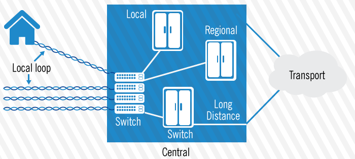
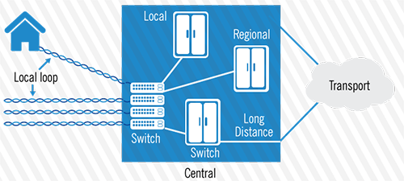
Source: Prioprietary
The hierarchical model of the Central Offices reduces the number of trunks (usually E1 digital links with transmission rates of 2.048 Mbps and SS7 signaling) and is distributed in primary centrals connecting calls outside of the defined geographical areas;toll switches that manage traffic between termination points associated with various local stations and local stations which are located in the local loop, the closest point to the subscriber.
Some regulatory authorities in different countries have defined fixed phone lines as a publicly available service, which consists of the commercial exploitation of activities that allow the transport of voice, where the originating communication terminal is connected to a point of fixed network terminal. This divided the fixed phone lines into basic traditional phones and public phones, where traditional basic telephones commercially exploit the voice through terminals connected at some point in the network. This has allowed the development of other services, both voice and data in the area of telephone services, like Voice over Internet Protocol or VoIP.
The VoIP service began to grow in the world, sue to how useful it was for companies with large traffic consumption and high operating costs, related to telecommunications. Its technological implementation began after the International Telecommunications Union released its H.323 recommendation for audiovisual communications over Packet Switched Networks. The massive deployment of this service was accelerated with the introduction of the SoftSwitch in the market (smart device, for the management and control of calls, which allows for the integration with the PSTN, while maintaining the scalability, reliability and quality of service). Another important item is the Gateway, which has two components, the Media Gateway and the Gateway Controller, that facilitate the interoperability with the connected networks and the signaling. The following image summarizes the implementation of the VoIP architecture and its connection to the fixed telephone network.
Figure 7. Integration of the VoIP Service with the PSTN
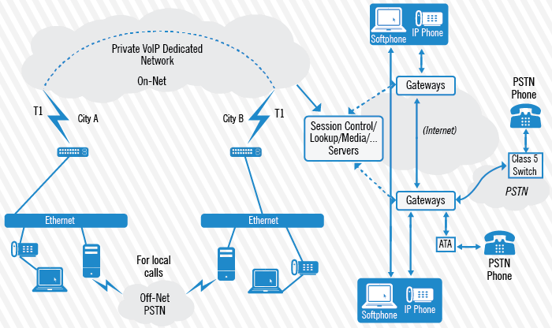
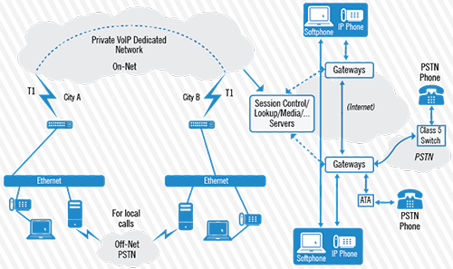
Source: Prioprietary
Subscription TV
In the late 1940s, television companies in the United States adopted the coaxial cable interface to modify their content provision service in one way. Ever since then, their business model has evolved along with the advances of technology, which allow transmitting voice, video and data, turning the cable TV operators into telecommunications service providers.
Currently, the access network for the subscription TV service is built on a hybrid network between coaxial and fiber optic, called HFC. This network, in particular, uses a tree and branch architecture with two-way transmission, with spacing between modems ranging from 24 km to 80 km and a maximum propagation delay of 0.8 ms, in which the maximum distance to the CMTS (Cable Modem Termination System) is 80 km.
The typical configuration for a cable TV network, capable of providing telecommunication services, is shown in the following image. This image shows the main elements of the system.
Figure 8. General Schematic Diagram for a Subscription TV Network
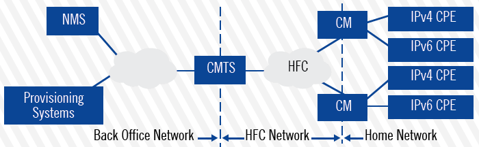
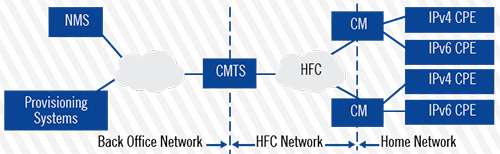
Source: Prioprietary
As shown in the above image, the CMTS is the network core component, as it receives signals from the HeadEnd and links both, the Network Management System (NMS) and the Network Provisioning System with the HFC network that distributes signals to the users, through cable modems. The objective of this implementation comes to address the need for increased bandwidth capacity, speeds, scalability, as well as improving the network maintenance practices and offer new services.
In regards to the radio frequency, a window is used for the downstream, its lower limit may be at 54 MHz, 87.5 MHz, 108 MHz or 258 MHz and its upper limit is in the range of 550 MHz to 1002 MHz. For the upstream, windows are used which lower limit is between 5-42 MHz, 5-65 MHz, 5-85 MHz, 5-117 MHz or the 5-204 MHz, their upper limit is always higher than 204 MHz.
The satellite or ground video signals over the air, which are within this range of frequency are received at the HeadEnd and combined with the local content to be modulated and then transmitted over fiber, in order to minimize losses over long distances. Then, the signal conversion is performed in the nodes, in order to be transmitted in analog manner with the coaxial cable segments, which require amplification to maintain the signal quality for all users.
The HFC network is able to provide bidirectional communication;the fiber portion alone could do it, using two wires for this, while the coaxial uses frequency division duplexing to accomplish the downstream and upstream on the same medium;therefore, the amplifiers must also be bidirectional. Furthermore, a 6 MHz channel is reserved for data and a 64-QAM modulation is applied to obtain an available bandwidth of 30 Mbps in the downstream. On the other hand, for the upstream, where lower bandwidth is required, a modulation with QPSK and 16 QAM is used. The RF signals are converted into digital signals in the CMTS;special attention must be paid to prevent collisions in the transmission when using CSMA / CD, because the bandwidth is shared among all the cable modems. The detail of this network architecture is shown in the following image.
Figure 9. Network Architecture of Subscription TV, which facilitates Data Transmission
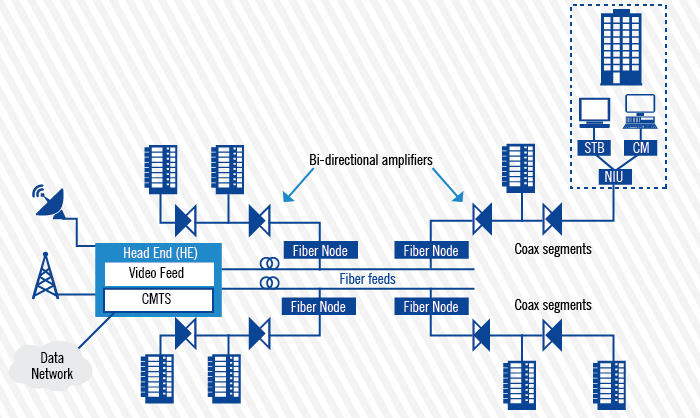
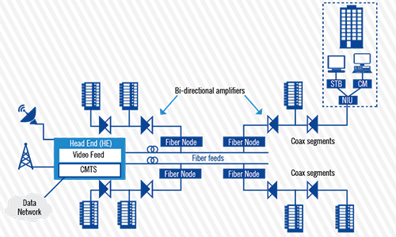
Source: Prioprietary
Data Transfer
This category of service includes all the packet switching networks and all those systems, that in order to enable their services, use the Internet Protocol, other routing protocols or both in their network layer.
By packet switching method, we mean the method that allows any data stream transmitted over a digital broadcast to become small structures called packets, which in addition to the information they carry, carry with them a wealth of additional information that they use to tell switches to where they need to move forward. Moreover, a switch is a device, which through specialized software, receives packets arriving from certain links, processes and forwards them to their destination on other links.
In general, packet switching exploits the ability of the switches (or routers) for multiplexing and demultiplexing the data frames belonging to different sessions of data transfer between different computer networks that are interconnected through physical links, whose capacity can be shared by multiple users.
Significantly, the packet switching networks can be differentiated by considering two aspects: the transmission of datagrams and the configuration of virtual circuits.
The path information is not known for switching datagrams -also called connectionless-, because the packages are broken and routed by different links until reordered at the destination. Also, virtual circuits achieve that packets follow the same route;the said route is selected from the beginning of the session, although this makes the transmission less flexible and it does require a dedicated link. This type of communication decreases the calculations in the active devices and provides a degree of safety known from the beginning. Examples of this technology are Frame Relay, ATM, MPLS and VCI, which despite their differences allow for the linking of their functionality to services in the transport layer and also provide services between the data layer and the network layer, such as virtual private circuits and others of the like.
The routing of datagrams normally uses the IP protocol and its implementation has spread from Local Area Networks (LANs) to Wide Area Networks (WAN);while other protocols, like BGP, have been implemented for transportation between autonomous systems, which has allowed the development of multiple modalities for accessing the internet and international transport services, peer-to-peer and many more. In short, packet switching offers advantages such as efficient data management, the ability to provide variable bandwidth, the ability to generate routing tables;they provide simplicity and quality of service.
However, the development of these technologies allowed for the deployment of networks that are capable of transmitting information through a set of technologies that link the routing part of the information with its transport, e.g. how a Virtual Circuit Network manages to connect two routers in different LAN IP-based networks.
To better understand the relationship between routing and transport, a conceptual model was developed, in which the data flow necessary for establishing communication is divided into 7 different layers. This model developed by the International Standards Organization (ISO) is known as the OSI model (Open System Interconnection). Based on the latter, the relationship between routing and transport can be identified and derived.
This model consists of various functionalities in its 7 layers. Each layer provides services to the layer above it (top layer) and receives services from the layer below it (bottom layer).
Communication is established between layers of the same level. That’s why layer 3 of a computer in a network communicates only with layer 3 of other computers in the same network.
Figure 10. OSI Model Representation
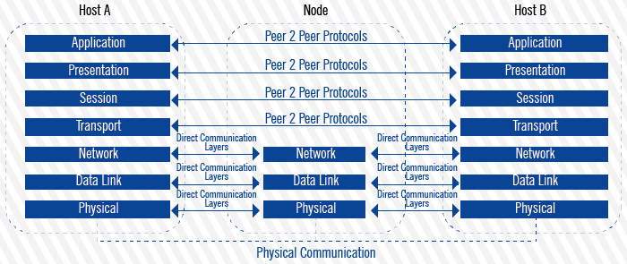
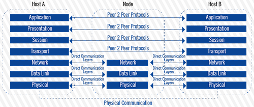
Source: Prioprietary
These layers define functions, but they do not define a specific protocol or type of connection. For each layer there are a number of protocols and interfaces that have been adopted by the telecommunications industry, in order to make communications more effective.
The OSI Layer Model has been an indispensable reference to conceptualize the telecommunication networks;one of these conceptualizations is the TCP / IP Model (Transmission Control Protocol / Internet Protocol), which relates the routing and transport portion. This model, also called Internet Model, describes a set of guidelines for the design and implementation of network protocols that allow for a computer to communicate over a Packet Switched Network in the presence of datagrams, virtual circuits, and others. This is possible because the model provides end-to-end connectivity by specifying protocols, data format and addressing, and congestion control, among other functions.
According to the provisions of the IETF (Internet Engineering Task Force), in the RFC 1122, a TCP/IP model consists of four layers, not seven. These are: Media Access, Internet, Transport and Application.
As mentioned before, the Internet layer uses the IP Protocol, in order to provide services of addressing, routing and QoS. The addressing can identify the terminals (hosts) present in the network and facilitates the routing of information between these, using protocols that employ different types of algorithms to choose the route and how to reach a given destination. These protocols are divided into two main classes, Link-State Routing Protocols such as OSPF and IS-IS, and Distance-Vector Routing Protocols, such as RIP and IGRP.
Moreover, in the transport layer, the most commonly used protocols include TCP (Transport Control Protocol) and UDP (User Datagram Protocol). In this layer, a data communication channel is established, in order to allow an end-to-end exchange of data. This data exchange is connection-oriented, using the TCP protocol and using the UDP protocol when connectionless. This relationship between TCP and IP, consolidated the Packet Switched Networks and allowed for the development of globally interconnected communication systems.
Finally, this entire packet switching architecture is supported by a network infrastructure, known as physical layer in the OSI Reference Model. This infrastructure consists of a number of technology platforms that use different means to provide communication links;among these, there are networks based on fiber optics, on coaxial cable, on a twisted copper pair and even over wireless media. The following image shows a series of interconnected networks based on Packet Switching.
Figure 11. Scheme of Several Interconnected Networks
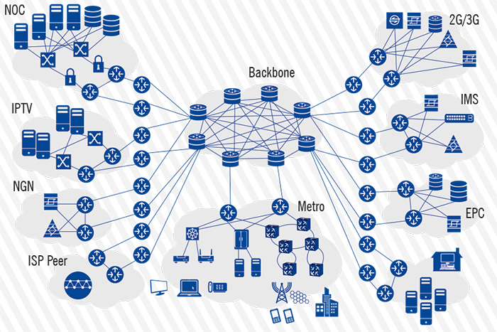
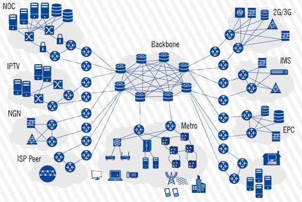
Source: Prioprietary
Summary of the Services Included in the Research
In the previous section, a technical description was offered for each of the networks supporting the different service types, which were pooled to collect market data from the operators and authorized service providers in the country.This will come to clarify which are the features and characteristics of each of the groups for the chosen services, and they are then compared with the commercial offerings, in order to specify which services available to the public make up each of the four categories mentioned in the following table: Mobile Telephones, Fixed Telephones, Data Transfer and Subscription TV.
Table 2.
| Telecommunication Service Category | Modalities Marketed | Supporting Networks Features |
|---|
| Mobile Telephones | Instant Messaging (SMS), Multimedia Messaging (MMS), postpaid voice service, prepaid voice service | Facilitates voice communication over wireless media access, allows sending and downloading data over the air interface. Its evolution is directed towards the all-IP architecture. |
| Fixed Telephones | Traditional Basic Telephone Lines, Voice over IP (VoIP), RDSI. | Known as PSTN, it uses a set of exchange centrals and trunks to establish temporary connections between two extremes;this is known as circuit switching. |
| Subscription TV | Satellite TV, Cable TV | Service is provided through different technologies, whether a satellite system or a cable system based on DOSIS 2.0 and above. It can broadcast data. |
| Data Transfer | Internet Access, International Carrier, Mobile Data, Leased Lines | Communications are achieved by generating data packets that are forwarded through the network, regardless of the propagation medium or network used. It is based on two techniques: datagram routing and virtual channels. |
Source: Prioprietary
Definition of Indicators Used
General definitions for each indicator included in this report are shown here, in order to provide clarity to the reader on the market information that was processed;volume and variety of which are expected to increase over time and as a response to the increasing interest of the network operators and service providers to participate and contribute to this annual research.
Table 3. Fixed Phone service
| Indicator | General Definition |
|---|
| Total Number of Active Fixed Telephone Lines | Number of lines that were activated to restablish the communication between Terminals over the Public Switched Telephone Network (PSTN). |
| Subscriptions of VoIP Telephone Lines | Number of registered subscriptions for Voice over Internet Protocol (VoIP), a service that uses the Public Switched Telephone Network (PSTN). |
| Service Subscriptions RDSI, BRI &PRI | Total number of subscriptions to the Integrated Services Digital Network (ISDN), which can be separated into the Basic Rate Interface (BRI) and Primary Rate Interface(PRI). |
| Fixed Telephone Traffic Traditional Basic Service | Minutes of traffic generated in the Public Switched Telephone Network (PSTN) to the same network and to other national and international networks. |
| Traffic within the network | Minutes of traffic generated and terminated within the same network |
| Traffic outside the network (Outbound) | Minutes of traffic originated within a network, targeted at other networks. |
| Traffic outside the network (Inbound) | Minutes of traffic generated in different networks and terminated within the same network |
| Traffic over VoIP | Minutes of traffic, both within and outside the Voice Network, over the Internet Protocol. |
| Fixed Phone Service | Sum of the Income billed for each monthly subscription and the traffic generated by these subscribers. |
| Income by VoIP | This indicator is the result of sum of the Income billed for each monthly subscription and the traffic generated by IP Phone subscribers. |
Table 4. Data Transfer Service
| Indicator | General Definition |
|---|
| Subscriptions to the Internet Access Service (wired and wireless) | Number of connections that were activated during the research period, in order to provide the Internet Access Service on different platforms, whether wired networks or wireless networks. |
| Subscriptions with fixed (wired) Internet Access. | Number of connections with Fixed Internet Access, which use Access Platforms with physical wired means (xDSL, Cable Modem, Fiber Optic, etc.) |
| Subscriptions with wireless Internet Access. | Number of connections with fixed Internet Access on wireless technologies that use the Radio Spectrum. |
| Subscriptions to Special Mobile Data | Number of connections to Mobile Data transmitted by special means such as data cards. |
| Leased Lines, both nationally and internationally in the Retail Market | Number of connections activated to establish the necessary links to ensure availability, bandwidth and security;which were sold at retail, within and outside the country. |
| Leased Lines, both nationally and internationally, in the Wholesale Market | Number of connections activated to establish the necessary links to ensure availability, bandwidth and security;which were sold at wholesale, both within and outside the country. |
| Connections to render other dedicated linking services (threads, VPN, links, ports and dark fiber) | Number of connections activated to establish the necessary links to ensure availability, bandwidth and security on different technological platforms. |
| Total Data Traffic | Total data amount, measured in TB, which are transferred between different networks, all of them deployed in the country. |
| Total income billed by fixed and wired Internet Access Service. | Total income billed and received for fixed wired Internet Service. |
| Total income billed by fixed wireless Internet Access. | Total income billed and received for fixed wireless Internet Access Service. |
| Total income billed by fixed wireless Internet Service. | Total income billed and received for wireless Internet Service, including Mobile Internet Access. |
| Total income billed by Mobile Internet Access. | Total income billed and received for Mobile Internet Access Service. This includes access to Mobile Internet through data cards. |
| Total income billed by Internet Access services | Total income billed by rendered services of Internet Access (both wired and wireless). |
| Total income billed by Leased Lines and similar services. | Total income billed and received for rendered services of Leased Lines and other services such as Threads, VPN, links, ports and dark fiber. |
Table 5. Mobile Phone Service
| Indicator | General Definition |
|---|
| Total Number of Mobile Subscriptions | Total number of subscriptions for the Mobile Phone Service in prepaid and postpaid modes |
| Mobile Subscriptions (postpaid) | Number of lines that recorded at least one chargeable activity on the Mobile Phone Network, as part of the postpaid mode. |
| Mobile Subscriptions (prepaid) | Number of lines that use prepaid cards, which recorded at least one taxable activity, within 90 calendar days prior to the last appraisal. |
| Total Mobile Voice Traffic | Minutes of traffic generated by Mobile Phone Subscribers, in their different modes, whether in their own networks or any other network. |
| Prepaid Mobile Traffic | Minutes of traffic generated by Mobile Phone Subscribers, in prepaid mode, in their own networks and to any other network. |
| Postpaid Mobile Traffic | Minutes of traffic generated by Mobile Phone Subscribers, in postpaid mode, in their own networks and to any other network. |
| Total International Mobile Voice Traffic | Minutes of traffic from and to international networks |
| Inbound International Mobile Voice Traffic | Minutes of traffic originated in international networks, targeted at proprietary mobile networks. |
| Outbound International Mobile Voice Traffic | Minutes of traffic originated in a proprietary mobile networks, targeted at an international network. |
| Total SMS Traffic | Number of short messages between subscribers in the same mobile network, as well as those sent and received to and from other mobile networks, in both forms of payment. |
| On Net SMS Traffic | Number of short messages between subscribers in the same mobile network, in both forms of payment. |
| Off Net SMS Traffic | Number of short messages between subscribers in the same mobile network, targeted at any other network, in both forms of payment. |
| Total Roaming Voice Traffic | Total number of minutes of all the inbound and outbound communications established when roaming. |
| Outbound Roaming Phone Traffic | Minutes of traffic of communications established by the users of a network, targeted at foreign networks. |
| Inbound Roaming Phone Traffic | Minutes of traffic of communications established by foreign users on their own networks. |
| Total MMS Traffic | Number of multimedia messages between subscribers in the same mobile network, and between subscribers of other networks, in both forms of payment. |
| Average price of a local call per minute (at peak hours in a fixed network) for mobile phones | Price of a local call per minute at peak hours on a mobile phone (prepaid or postpaid) to the fixed telephone network. *The calculation is based on the distribution of income generated by prepaid mobile calls made to a fixed network during times of high consumption (peak), divided by the number of minutes of these calls. Tax included. |
| Average price of a local call per minute (at peak hours in a fixed network) for mobile phones. | Price of a local call per minute at peak hours on a mobile phone (prepaid or postpaid) to a fixed telephone network. The calculation of this indicator is based on the distribution of income generated by prepaid mobile calls made to a fixed network during times of high consumption (peak), divided by the number of minutes of these calls. Taxes and applicable tax rates included. |
| Average price of a local call per minute (at peak hours, off net) for mobile phones | Price of a local call per minute at peak hours on a mobile phone (prepaid or postpaid) to a mobile telephone in another network. The calculation of this indicator is based on the distribution of income generated by prepaid off net mobile calls, divided by the number of minutes of these calls. Taxes and applicable tax rates included. |
| Average price of a local call per minute (weekend / evenings, on net) for mobile phones | Price of a local call per minute on the weekends or in the evening on a mobile phone (prepaid or postpaid) to a mobile telephone in the same network. Taxes must be included. Otherwise, it must be clarified in a note, stating the applicable tax rate. The calculation of this indicator is based on the distribution of income generated by prepaid on net mobile calls, placed on the weekends or in the evening, divided by the number of minutes of these calls. |
| Average price of a local call per minute (weekend / evenings, off net) for mobile phones. | Price of a local call per minute on the weekends or in the evening on a mobile phone (prepaid or postpaid) to a mobile telephone in a different network. The calculation of this indicator is based on the distribution of income generated by prepaid off net mobile calls, placed on the weekends or in the evening, divided by the number of minutes of these calls. Taxes and applicable tax rates included. |
| Average price of a local call per minute (weekend / evenings, to a fixed net) for mobile phones. | Price of a local call per minute on the weekends or in the evening on a mobile phone (prepaid or postpaid) to a fixed telephone network. The calculation of this indicator is based on the distribution of income generated by prepaid mobile calls to a fixed network, placed on the weekends or in the evening, divided by the number of minutes (traffic). Taxes and applicable tax rates included. |
| SMS average price (on net) for prepaid and postpaid mobile phones. | Average price of sending a short message (SMS) on a mobile phone (prepaid or postpaid) to a mobile telephone in the same network. The calculation of this indicator is based on the distribution of income generated, divided by the number of SMS on net. Tax included. |
| SMS average price (off net) for prepaid and postpaid mobile phones. | Average price of sending a short message (SMS) on a mobile phone (prepaid or postpaid) to a mobile telephone of a different network. The calculation of this indicator is based on the distribution of income generated, divided by the number of SMS off net. Taxes and applicable tax rates included. |
| Total Income Mobile Phones | Corresponds to the sum of the income received for the mobile voice service, SMS/MMS and Internet. |
| Total income of mobile voice associated to the prepaid and postpaid mobile phone service | Total income associated to the prepaid and postpaid mobile phone service They are built based on the aggregation of income generated by monthly fees, the income by exceeding minutes and other charges, generated as part of the services rendered for the mobile phone service and not part of the monthly fee or part of the inherent fee of the exceeding minutes, as is the case of fines due to suspension and reconnection. |
| SMS / MMS Income | Income associated to the SMS and MMS Traffic, both on net and off net. |
| Mobile Internet Income | Income billed for rendered services of Mobile Internet Access. |
| Prepaid Mobile Income | Corresponds to the sum of the income received for the mobile voice service, SMS/MMS and Internet, as prepaid services. |
| Postpaid Mobile Income | Corresponds to the sum of the income received for the mobile voice service, SMS/MMS and Internet, as postpaid services. |
| Income due to Outbound Roaming Phone Traffic (minutes) | Income generated by mobile telephone subscribers when making and receiving calls outside the service area of their country’s network, e.g., when traveling abroad. |
| Income due to Inbound Roaming Phone Traffic (minutes) | Income generated by visiting subscribers (foreigners) when making and receiving calls in a country. This income is received by the network operators in the country where subscribers visit. |
| Outbound Roaming SMS and MMS Income | Income generated by mobile telephone subscribers when sending SMS and MMS, when they’re outside the service area of their country’s network. |
| Income due to the Sale of Mobile Devices | |
Table 6. Subscription TV Service
| Indicator | Definition |
|---|
| Total number of subscribers to the paid TV service, through cable TV networks | Total number of subscribers to the paid TV service, broadcasted primarily by Fiber Optic and Coaxial Cable hybrid networks (HFC) Networks, which allow for various Telecom Services to be offered. |
| Total number of subscribers to the paid TV service, through Direct to Home (DTH) services | Number of subscriptions to paid TV services, corresponding to television signals that are received from a communications satellite and transmitted from the operator to the receiving equipment of the end user. |
| Total number of subscribers to the paid TV service, through IPTV | Total number of subscribers to the paid TV service, through broad band connections over IP Protocol. |
| Total number of subscribers to the paid TV service, via multipoint distribution (MMDS). | Total number of subscribers to the paid TV service, using the Microwave Multipoint Distribution Service (MMDS) Transmits signals wirelessly to the end user and allows the provision of other telecommunications services. |
| Income due to Subscription TV Service. | Total income billed by the subscription TV service, without any deductions (tax, returns, rebates, allowances, discounts, canceled sales, etc.), received in the country by the providers of the subscription TV service. Note: In the case of income in a currency other than the CR Colon, you must convert the amounts to CR Colones using the exchange rate, provided by the Central Bank of Costa Rica, at every month end closing. |